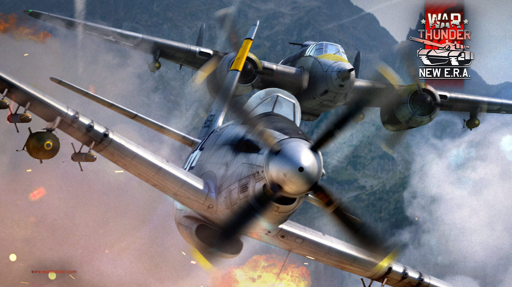

WAR THUNDER
este jogo e um simulador de guerra que tras consigo muitos conteudos podendo jogar de tanque, aviao, navio e helicoptero..
este jogo atualmente contem mais de 1 milhao de players ativos trazendo pouco tempo de espera para encontrar partidas.
Modos de jogo
atualmente este game contem 3 modos de jogos:
resumidamente o modo de batalhas realistas sao partidas que fazem jus ao
nome trazendo realismo para o game aplicando todas as fisicas posssiveis no jogo como por exemplo no modo aviao nao se tem a mira de suporte e a onda de explosão da bomba que voce lançou pode te danificar.
ja no modo realista se aplicada a mesma condição que no realistaporem com um acrescimo que voce pode apnas jogar em primeira pessoa.
ja no arcade o jogo e muito mais simples nao se aplicando toda a fisica que o game oferece tordando as partidas muito mais dinamicas e divertidas
eu basicamente prefiro o modo realista jogando de tanque e claro kkkkk aviao e muito dificil
para mais informações clique aqui para mais informções.
Vocês também podem dar uma olhada no meu canal do you tube. Lá faço postagaens de algumas gameplays, espero que voês gostem do conteúdo.
Gostaria de compartilhar com voces um funny gameplay para vocês. Quero ressaltar que este modo de jogo que estou e o real tank battle e neste modo e possivel fazer o uso de avioes
Clique na imagem abaixo para ser redirecionado!!!
